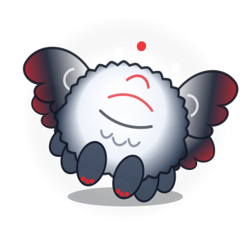

Meet Tchiko.
Your Squishy, Six-Legged
Hero Agent.
Inspired by the mythical faceless Dijiang (Hundun) from Shang-Chi’s realm of Ta Lo,
Tchiko floats right on your Ubuntu desktop as a cloud-soft marshmallow pet in
Snowy White, Crimson Red, and Velvet Black.
Click your mouse scroll-wheel on Tchiko to pop open his quick input bar, press
Enter, and watch him talk back in a floating speech bubble while generating OpenSSH keys,
checking ports, and running Linux commands.
with Jelly Squish Physics
& Crimson Toe-Beans
in White, Black & Red
The Tchiko Field Sketchbook
Every illustration below is a genuine vector .svg exported directly from our Ubuntu desktop
engine (SvgGhostRenderer.export_to_svg) — zero external stock assets.
Default desktop state — 32 scalloped cloud puffs, snowy belly cushion, and gentle crimson fireflies.

Triggered when you rub your cursor over Tchiko — squishes wide with musical notes (♪) and crimson glow.

Puffs out his chest and spreads all four crimson-tipped wings with a soft white shockwave ring.

Active while executing Linux shell commands, generating OpenSSH keys, or inspecting system telemetry.

Tilts his faceless fluffy body at a curious angle while reasoning with the Google Antigravity SDK.

After 38 seconds of desktop inactivity, Tchiko tucks in his 6 stubby paws and drifts off with crimson Zzzs.

Crafted Like a Pet.
Engineered Like a Sysadmin.
Most AI tools trap you inside a browser tab. Tchiko lives right on your Ubuntu workspace — quietly floating above your windows without cluttering your screen with status tags.
Ask Tchiko... ↵ bar.
Enter and Tchiko replies in a speech bubble above his head with 1-click 📋 Copy.
ed25519/rsa) for Hetzner, checks ports, and runs bash tools.
antigravity.yaml for full Ubuntu control.
Bring Tchiko to Your Ubuntu Desktop
Clone, run the self-test (which also exports all vector SVGs in assets/), and launch.